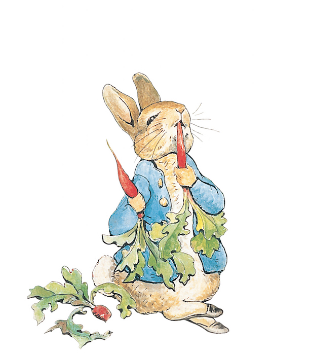

Savvy Saltines
Attention, Attention, readers alike, this comma is seeking a ship.
The comma wants to reach Jupiter, alas,
adventure is only as thin as the page in your hand
without your help, he will never make it.

Tatiana Lancaster is a Texas native living in New York. She received an MFA in Creative Writing from Sarah Lawrence College and studied classical literature at the University of Houston. She's a storyteller and a doodler.